Chapter 5 Multivariate Time Series Modelling
This chapter is heavily based on Chapter 13 of Chatfield and Xing (2019) and Tsay (2013) .
5.1 Introduction
- Multivariate time series analysis considers observations taken simultaneously on two or more time series.
- Focus of multivariate time series analysis
- Study the dynamic relationships between variables
- Serial dependence within each series and the interdependence between series.
- Improve the accuracy of prediction
- Challengers with Multivariate models
- Model building process is more difficult for multivariate than univariate models
- More variables to measure (More chance of mistakes in the data)
- More parameters to estimate
- Wider pool of candidate models
- More vulnerable to specification than simpler univariate models.
- Balance between parsimonious modelling and accurate identification.
5.2 The Cross-Correlation Function
- Cross-correlation function is a key tool in multivariate time series analysis.
- Let \(\{\mathbf{X}_t\}\) is an m-variate multivariate process, where \(\mathbf{X}_t^T = (X_{1t}, X_{2t}, \dots, X_{mt})\)
Cross-covariance
- Let \(\symbf{\mu}_t\) be the vector of mean values of \(\{\mathbf{X}_t\}\) at time t.
- Then its \(i\)th component is \(\mu_{it}=E(X_{it})\).
- Let \(\Gamma(t,t+k)\) be the cross-covariance matrix of \(\mathbf{X}_t\) and \(\mathbf{X}_{t+k}\) such that its \((i,j)\)th element is the cross-covariance coefficient of \(X_{it}\) and \(X_{j, t+k}.\)
- A multivariate process is said to be second-order stationary if the mean and the cross-covariance matrices at different lags do not depend on time.
- Then \(\symbf{\mu}_t\) will be a constant (say \(\symbf{\mu}\)) and \(\Gamma(t,t+k)\) will be a function of the lag \(k\) only ( \(\Gamma(k)\)).
- Then \(\gamma_{ij}(k)\), the \((i,j)\)th element of (\(\Gamma(k)\)) can be written as
\[\gamma_{ij}(k)=\text{Cov}(X_{it},X_{j,t+k} )= E[(X_{it}-\mu_i)(X_{j,t+k}-\mu_j)]\]
- In the stationary case, the set of cross-covariance matrices, \(\Gamma(k)\) for \(k=0, \pm1, \pm2, \dots,\) is known as covariance matrix function.
- Since
\[\gamma_{ij}(k)= \text{Cov}(X_{it},X_{j,t+k} )= \text{Cov}(X_{j,t+k}, X_{it} ) = \gamma_{ij}(-k),\]
we have \[\Gamma(k)=\Gamma^T(-k), \quad k=0, \pm1, \pm2, \dots.\]
- It is not an even function of lag.
- The diagonal terms, \(\gamma_{ii}(k)\), are auto- rather than cross- covariances, and therefore have the property of being an even function of lags.
Cross-correlation
- Let \(R(k)\) be the cross-correlation matrix function of the process.
- The \((i,j)\)the element of \(R(k)\) is given by
\[\rho_{ij}(k)= \text{Corr}(X_{j,t+k}, X_{it} )=\gamma_{ij}(k)/\sigma_i\sigma_j\] where \(\sigma_i\) is the standard deviations of \(X_{it}\) (this can also be expressed as \(\sqrt{\gamma_{ii}(0)}.\))
- When \(k>0\), the correlation coefficient measures the linear dependence of \(X_{j, t+k}\) on \(X_{it},\) which occurs after time \(t\).
- If \(\rho_{ij}(k)\neq0\) and \(k>0\), the series \(X_{it}\) leads the series \(X_{jt}\) at lag \(k\).
Furthermore, we can write \[R(K)=R^T(-k), \quad \quad k=0, \pm1, \pm2, \dots.\]
Therefore, in practice, it is enough to consider the cross-correlation matrices \(R(k)\) for \(k>0\).
Sample cross-correlation coefficient
- Let \(T\) be the total number of observations collected on the \(m\) variables over the same time period.
- Then the sample cross-covariance coefficient of \(X_i\) and \(X_j\) at lag \(k\) is given by
\[ c_{ij}(k)= \begin{cases} \sum_{t=1}^{T-k}(x_{it}-\bar{x_i})(x_{j,t+k}-\bar{x_j})/ T,& \quad k=0, 1,2, \dots,(T-1)\\ \sum_{t=1-k}^{T}(x_{it}-\bar{x_i})(x_{j,t+k}-\bar{x_j})/ T,& \quad k=-1,-2, \dots,-(T-1). \end{cases} \]
- The sample cross-correlation coefficient of \(X_i\) and \(X_j\) at lag \(k\) is given by \[\gamma_{ij}(k)=c_{ij}(k)/s_is_j\] where \(s_i=\sqrt{c_{ii}(0)}\) is the sample standard deviation of observations on the \(i\)th variable.
Example
- Consider the daily returns of adjusted closing prices of the Standard & Poor’s 500 (S&P500), the Dow Jones Industrial Average and the Nasdaq Composite indices from January 4, 1995 to February 25, 2021 (Figure 5.1).
- These three market indices characterize the performance of the U.S. stock market from different perspectives and therefore they should be highly correlated.
# Tidy financial analysis
library(tidyquant)
#S&P 500 index
sp500 <- tq_get("^GSPC", from = "1995-01-04", to = "2021-02-25" )
print(sp500)## # A tibble: 6,582 x 8
## symbol date open high low close volume adjusted
## <chr> <date> <dbl> <dbl> <dbl> <dbl> <dbl> <dbl>
## 1 ^GSPC 1995-01-04 459. 461. 458. 461. 3.20e8 461.
## 2 ^GSPC 1995-01-05 461. 461. 460. 460. 3.09e8 460.
## 3 ^GSPC 1995-01-06 460. 462. 459. 461. 3.08e8 461.
## 4 ^GSPC 1995-01-09 461. 462. 460. 461. 2.79e8 461.
## 5 ^GSPC 1995-01-10 461. 465. 461. 462. 3.52e8 462.
## 6 ^GSPC 1995-01-11 462. 464. 459. 462. 3.46e8 462.
## 7 ^GSPC 1995-01-12 462. 462. 461. 462. 3.13e8 462.
## 8 ^GSPC 1995-01-13 462. 466. 462. 466. 3.37e8 466.
## 9 ^GSPC 1995-01-16 466. 470. 466. 469. 3.16e8 469.
## 10 ^GSPC 1995-01-17 469. 470. 468. 470. 3.32e8 470.
## # … with 6,572 more rows# The Dow Jones Industrial Average (DJIA)
dji<- tq_get("^DJI", from = "1995-01-04", to = "2021-02-25" )
print(dji)## # A tibble: 6,582 x 8
## symbol date open high low close volume adjusted
## <chr> <date> <dbl> <dbl> <dbl> <dbl> <dbl> <dbl>
## 1 ^DJI 1995-01-04 3838. 3858. 3831. 3858. 272200 3858.
## 2 ^DJI 1995-01-05 3858. 3861. 3843. 3851. 258100 3851.
## 3 ^DJI 1995-01-06 3851. 3887. 3842. 3867. 302400 3867.
## 4 ^DJI 1995-01-09 3867. 3874. 3853. 3861. 208200 3861.
## 5 ^DJI 1995-01-10 3861. 3899. 3861. 3867. 282500 3867.
## 6 ^DJI 1995-01-11 3867. 3883. 3840. 3862. 281000 3862.
## 7 ^DJI 1995-01-12 3862 3864. 3851. 3859 237400 3859
## 8 ^DJI 1995-01-13 3859 3910. 3859 3908. 305800 3908.
## 9 ^DJI 1995-01-16 3908. 3937. 3907. 3932. 292500 3932.
## 10 ^DJI 1995-01-17 3932. 3935. 3916. 3931. 268800 3931.
## # … with 6,572 more rows# The Nasdaq Composite
nasdaq<- tq_get("^IXIC", from = "1995-01-04", to = "2021-02-25" )
print(nasdaq)## # A tibble: 6,582 x 8
## symbol date open high low close volume adjusted
## <chr> <date> <dbl> <dbl> <dbl> <dbl> <dbl> <dbl>
## 1 ^IXIC 1995-01-04 745. 746. 740. 746. 2.90e8 746.
## 2 ^IXIC 1995-01-05 747. 748. 745. 746. 2.98e8 746.
## 3 ^IXIC 1995-01-06 746. 751. 746. 750. 3.13e8 750.
## 4 ^IXIC 1995-01-09 750. 753. 750. 752. 2.67e8 752.
## 5 ^IXIC 1995-01-10 754. 759. 754. 757. 3.54e8 757.
## 6 ^IXIC 1995-01-11 758. 760. 752. 756. 3.30e8 756.
## 7 ^IXIC 1995-01-12 756. 757. 755. 757. 3.02e8 757.
## 8 ^IXIC 1995-01-13 758. 762. 757. 762. 3.14e8 762.
## 9 ^IXIC 1995-01-16 762. 769. 762. 768. 3.01e8 768.
## 10 ^IXIC 1995-01-17 769. 772. 768. 772. 3.37e8 772.
## # … with 6,572 more rows# Convert each assets raw adjusted closing prices to returns
sp500_return <- sp500 %>%
tq_transmute(select = adjusted,
mutate_fun = periodReturn,
period = "daily")
dji_return <- dji %>%
tq_transmute(select = adjusted,
mutate_fun = periodReturn,
period = "daily")
nasdaq_return <- nasdaq %>%
tq_transmute(select = adjusted,
mutate_fun = periodReturn,
period = "daily")
p1 <- sp500_return %>%
as_tsibble(index = date) %>%
autoplot(daily.returns) +
labs(x = "Day", y= "S&P500")
p2 <- dji_return %>%
as_tsibble(index = date) %>%
autoplot(daily.returns) +
labs(x = "Day", y= "Dow Jones")
p3 <- nasdaq_return %>%
as_tsibble(index = date) %>%
autoplot(daily.returns) +
labs(x = "Day", y= "Nasdaq")
p1 / p2/ p3Figure 5.1: Daily returns of adjusted closing prices of the Standard & Poor’s 500 (S&P500), the Dow Jones Indutrial Average and the Nasdaq Composite indices from January 4, 1995 to February 25, 2021
A function of computing sample cross correlation
- We use the
ccmfunction of theMTSpackage in R to obtain the cross-correlation plots for a dataset.
library(MTS)
data <- full_join(sp500_return, dji_return, by= "date" )
data <- full_join(data, nasdaq_return, by ="date" )
colnames(data) <- c("date", "sp500", "dji", "nasdaq")
ret <- data %>%
select(sp500, dji, nasdaq) %>%
as.matrix()
MTS::MTSplot(ret)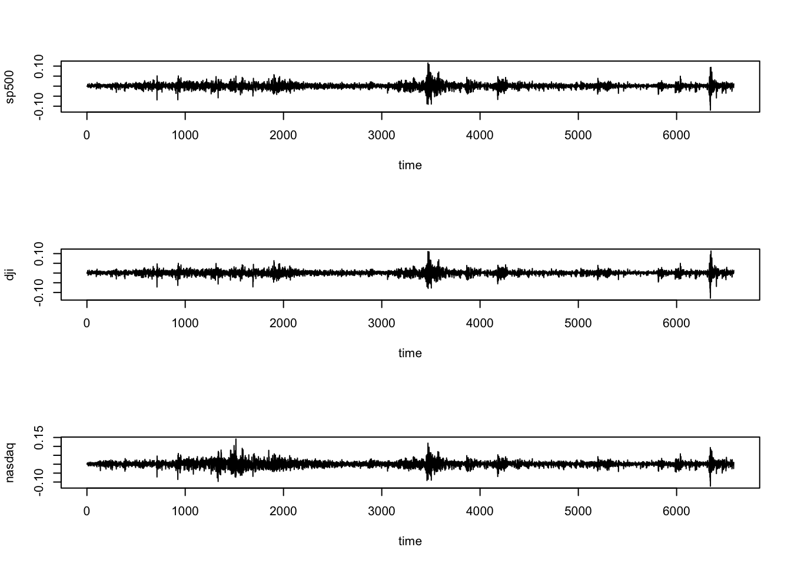
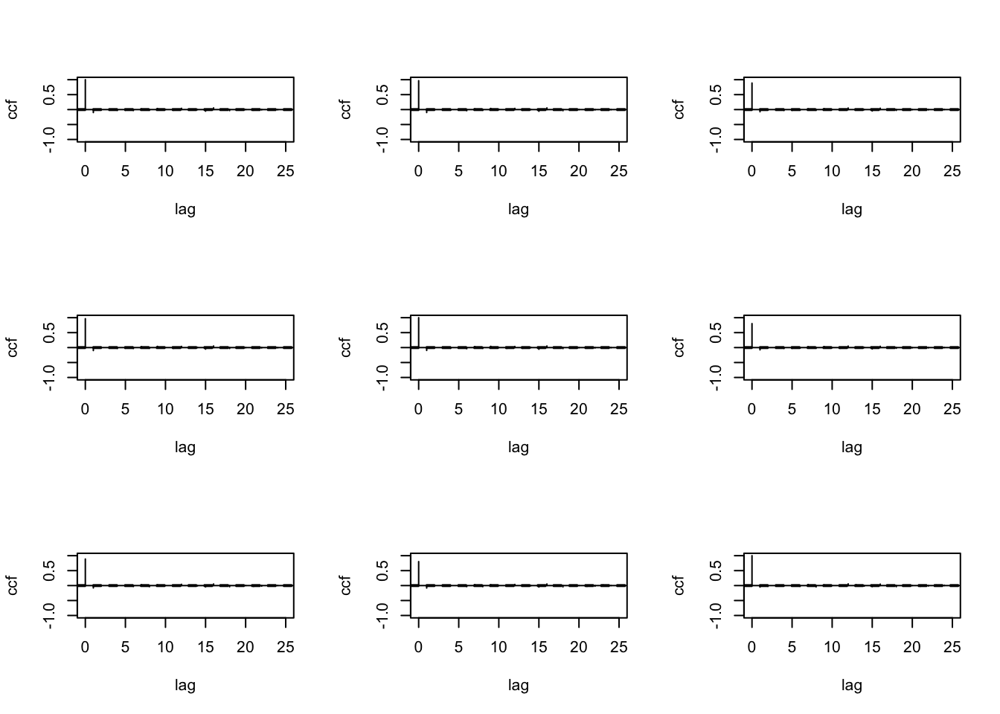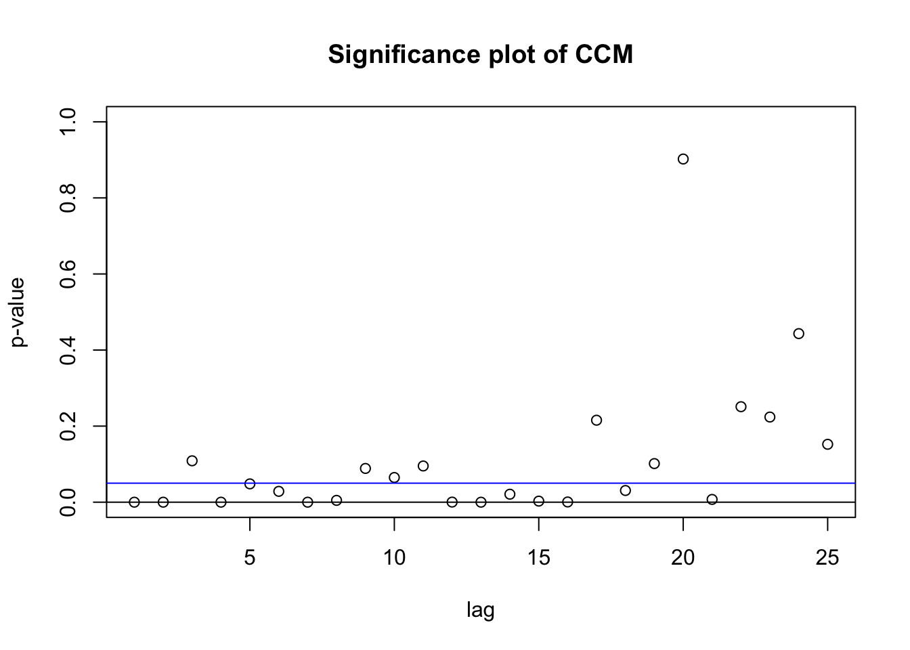
- The concurrent interdependence of the three series are very strong.
- However, the lead-lag effect among the three series is relatively weak.
5.3 Vector Autoregressive Models
- The most commonly used multivariate time series model is the vector autoregressive (VAR) model.
- To study the properties of VAR(p) models, we start with the simple VAR(1) model.
5.3.1 VAR(1) models
- Consider \(m\)-variate multivariate process, \(\{\mathbf{X}_t\}\), where \(\mathbf{X}_t^T=(X_{1t}, X_{2t}, \dots, X_{mt}).\)
- For simplicity, we restrict the attention to the case \(m=2.\)
- For stationary series, we may, without loss of generality, assume the variables have been scaled to have zero mean.
- Now the model allows the values of \(X_{1t}\) and \(X_{2t}\) to depend linearly on the values of both series at time \((t-1_).\)
- The resulting model for the two series then consist of two equations
\[ \begin{cases} X_{1t} = \phi_{11}X_{1,t-1}+ \phi_{12}X_{2,t-1}+\epsilon_{1t}\\ X_{2t} = \phi_{21}X_{1,t-1}+ \phi_{22}X_{2,t-1}+\epsilon_{2t}\\ \end{cases} \] where \(\{\phi_{ij}\}\) are constants.
- The two error terms, \(\epsilon_{1t}\) and \(\epsilon_{2t}\) are usually assumed to be white noise, but are often allowed to be correlated contemporaneously.
- Note: If coefficients, \(\phi_{12} = \phi_{21}=0\), then \(X_{1t}\) and \(X_{2t}\) are not dynamically correlated.
- If one of \(\phi_{12}\) and \(\phi_{21}\) is not zero, say \(\phi_{12}=0\) and \(\phi_{21}\neq 0,\) then \(X_{1t}\) does not depend on the lagged values of \(X_{2t}\).
Then the system of equations reduces to \[ \begin{cases} X_{1t} = \phi_{11}X_{1,t-1}+\epsilon_{1t}\\ X_{2t} = \phi_{21}X_{1,t-1}+ \phi_{22}X_{2,t-1}+\epsilon_{2t}. \end{cases} \]
- This indicates that, while \(X_{2t}\) depends on the lagged value of \(X_{1t},\) there is no feedback from \(X_{2t}\) to \(X_{1t}.\)
That is, any causality goes only in one direction and therefore \(X_{1t}\) can be considered as the input and \(X_{2t}\) can be considered as the output.
Vector Form
- The system of equation can be written in vector form as
\[\mathbf{X}_t=\Phi\mathbf{X}_{t-1}+\symbf{\epsilon}_t\]
where \(\symbf{\epsilon}_t^T=(\epsilon_{1t},\epsilon_{2t})\) and
\[ \Phi= \begin{pmatrix} \phi_{11} & \phi_{12}\\ \phi_{21} & \phi_{22} \end{pmatrix}. \]
- The above equation looks like and AR(1) model except that \(\mathbf{X}_t\) and \(\symbf{\epsilon}_t\) are now vectors instead of scalars.
- Since \(\mathbf{X}_t\) depends on \(\mathbf{X}_{t-1}\), this model is called a vector autoregressive model of order 1 (VAR(1)).
- The above equation can also be expressed as
\[(I-\Phi B)\mathbf{X}_t=\symbf{\epsilon}_t\] where \(B\) is the backward shift operator, and \(I\) is the \((2\times2)\) identity matrix and \(\Phi B\) represents the operator matrix
\[ \begin{pmatrix} \phi_{11}B & \phi_{12}B\\ \phi_{21}B & \phi_{22}B \end{pmatrix}. \]
- The necessary and sufficient condition for the stationarity of \(\mathbf{X}_t\) is that the roots of the determinant of \(I-\Phi B\) lie outside the unit circle.
5.3.2 VAR(p) models
- The above VAR(1) model can be generalized from two to \(m\) variables and from first-order auto-regression to \(p\)th order.
- A VAR model of order \(p\) (\(VAR(p)\)) can be written in the form
\[\Phi(B)\mathbf{X}_t=\symbf{\epsilon}_t\]
where \(\mathbf{X}_t\) is a \((m\times1)\) vector of observed variables, and \(\Phi\) is a matrix polynomial of order \(p\) in the backward shift operator \(B\) such that
\[\Phi(B)=I-\Phi_1B-\dots-\Phi_pB^p,\]
where \(I\) is the \((m\times m)\) identity matrix and \(\Phi_1, \Phi_2, \dots, \Phi_p\) are \((m\times m)\) matrices of parameters.
- Since we restrict attention to stationary processes, without loss of generality, we assume the variables have been scaled to have zero mean.
- The condition for stationarity is that the roots of the equation
\[\text{determinant}\{\Phi(x)\}=|I-\Phi_1x-\Phi_2x^2-\dots-\Phi_px^p|=0,\]
should lie outside the unit circle.
- Let \(\symbf{\epsilon}_t = (\epsilon_{1t}, \epsilon_{2t}, \dots, \epsilon_{mt})\) denote and \((m\times 1)\) vector of random variables.
- This multivariate time series is called a multivariate white noise if it is stationary with zero mean vector \(\mathbf{0}\), and if the values of \(\symbf{\epsilon}_t\) at different times are uncorrelated.
- Then the \((m\times m)\) matrix of the cross-covariances of the elements of \(\symbf{\epsilon}_t\) with that of \(\symbf{\epsilon}_{t+j}\) is given by
\[ \text{Cov}(\symbf{\epsilon}_t, \symbf{\epsilon}_{t+j}) \begin{cases} \Gamma_0 & j=0\\ 0_m & j\neq0, \end{cases} \]
where \(\Gamma_0\) denotes a \((m\times m)\) symmetric positive-definite matrix and \(0_m\) denotes an \((m\times m)\) matrix of zeros.
- Therefore, each component of \(\symbf{\epsilon}_t\) behaves like univariate white noise.
- Further, \(\Gamma_0\), the covariance matrix at lag zero, does not need to be diagonal, as an innovation at a particular time point could affect more than one measured variable at that time point.
- Therefore, we allow the components of \(\symbf{\epsilon}_t\) to be contemporaneously correlated.
5.3.3 Vector ARMA models
- As in the univariate case, the VAR models can also be generalized to include moving average (MA) terms as
\[\Phi(B)\mathbf{X}_t=\Theta(B)\symbf{\epsilon}_t\]
where \[\Theta(B)=I+\Theta_1 B-\dots-\Theta_qB^p,\]
is a matrix polynomial of order \(q\) in the backward shift operator \(B\) and \(\Theta_1, \Theta_2,\dots, \Theta_q\) are \((m\times m)\) matrices of parameters.
- Then \(\mathbf{X}_t\) follows a vector ARMA (VARMA) model of order \((p,q).\)
- The necessary and sufficient condition for the stationarity of \(\mathbf{X}_t\) is that the roots of the determinant of \(I-\Phi B\) lie outside the unit circle.
- The condition for invertibility is that the roots of the equation
\[\text{determinant}\{\Theta(x)\}=|I+\Theta_1x+\Theta_2x^2+\dots+\Theta_px^q|=0,\] lies outside the unit circle.
5.3.4 Vector ARIMA models
- If \(\Phi(B)\) includes a factor of the form \(I(1-B),\) then the model is not stationary and deal with the first differences of the components of \(\mathbf{X}_t\).
- Such a model is called a vector ARIMA (VARIMA) model.
- However, in practice, it may not be optimal to difference each component of \(\mathbf{X}_t\) in the same way and should consider the possible presence of co-integration before differencing multivariate data.
- VARMA models can be generalized further by adding terms, involving additional exogenous variables to the right hand side of the equation and they are known as VARIMAX models.
5.4 Fitting VAR and VARMA models
- The process involves assessing the order \(p\) and \(q\) of the model, estimating the parameter matrices and estimating the variance-covariance matrix of the noise components.
5.4.1 Forecasting
- Forecasts can be computed for VAR, VARMA and VARIMA models by a natural extension of methods used for univariate ARIMA models.
- Minimum mean square error (MMSE) forecasts can be obtained by replacing
- future values of white noise with zeros
- future values of \(\mathbf{X}_t\) with MMSE forecasts
- present and past values of \(\mathbf{X}_t\) with the observed values
- present and past values of \(\epsilon_t\) with the one step head forecast residuals.
Example- Analysis of macro-economic series
Here we consider the U.S. quarterly gross domestic product (gdp), the civilian unemployment rate (unrate) and consumer price index (cpi) for all urban consumers from the first quarter of 1948 to the third quarter of 2017.
data <- read.csv(here::here("data", "macrots.csv" ))
data$quarter <- as.Date(data$quarter)
data <- data %>%
select(-X) %>%
as_tsibble(index = "quarter")
p1<- data %>% autoplot(gdp) +
xlab ("Quarter")
p2<- data %>% autoplot(unrate) +
xlab ("Quarter")
p3<- data %>% autoplot(cpi)+
xlab ("Quarter")
p1/p2/p3Figure 5.2: Time series plot of GDP, unemployment rate and CPI
- All the series display some level of nonstationarity (Figure 5.2).
- Therefore we transform the data by calculating the rate of change or difference for each series (Figure 5.3).
n<-nrow(data)
# Change rate of GDP
data$gdprate <- c(NA,diff(data$gdp)*100/data$gdp[1:(n-1)])
# The difference of unemployment rate
data$unemdiff <- c(NA,diff(data$unrate))
# Measure of inflation
data$cpirate <- c(NA,diff(data$cpi)*100/data$cpi[1:(n-1)])
p1<- data %>% autoplot(gdprate) +
xlab ("Quarter")
p2<- data %>% autoplot(unemdiff) +
xlab ("Quarter")
p3<- data %>% autoplot(cpirate)+
xlab ("Quarter")
p1/p2/p3Figure 5.3: Time series plot of the difference series
- The scatterplot matrix in Figure 5.4 shows the cross-sectional dependence of the three series.
- Figure 5.4 shows a concurrent regression relationship between
gdprateandunemdiff,gdprateandcpirate, respectively.
Figure 5.4: Scatterplot matrix
- Then we check the sample cross-correlations to see whether there are any lead or lag effects among the three series (Figure ??.
data2 <- data %>%
as_tibble() %>%
select("gdprate", "unemdiff", "cpirate") %>%
as.matrix()
data2 <- data2[-1,]
MTS::ccm(data2, lags = 25)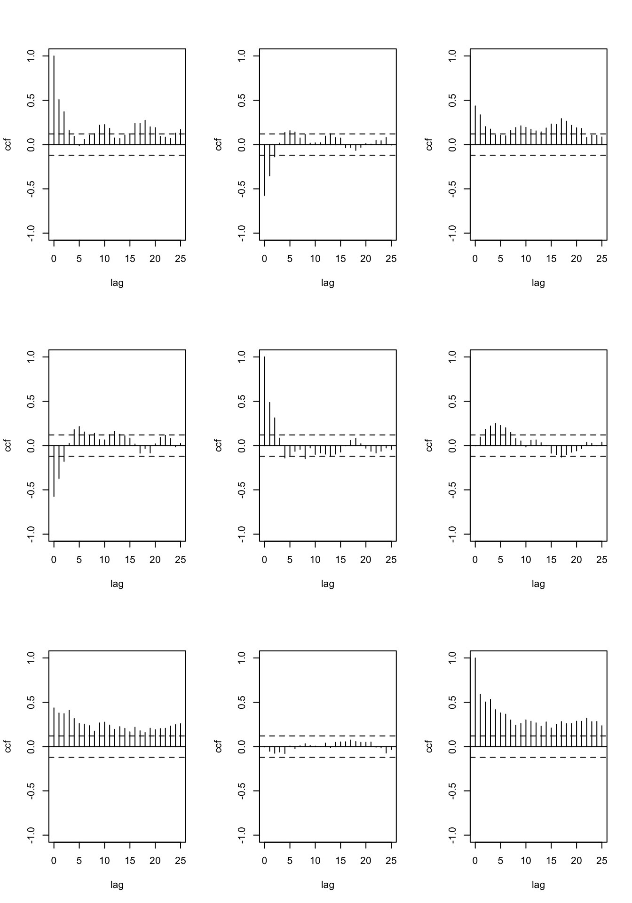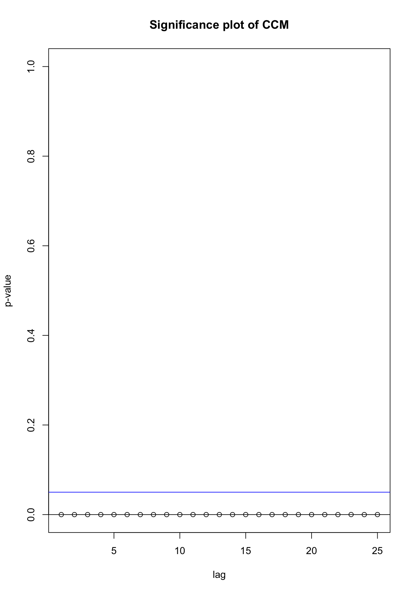
- First, we consider a VAR(1) model for \(\mathbf{X}_t\).
- We use the
VARMAfunction in theMTSR package.
## Number of parameters: 9
## initial estimates: 0.7327 0.1979 0.251 -0.077 0.3654 0.1182 0.2389 0.2681 0.5174
## Par. lower-bounds: 0.6185 -0.1504 0.0784 -0.1156 0.2477 0.0599 0.1651 0.0429 0.4058
## Par. upper-bounds: 0.8469 0.5463 0.4237 -0.0384 0.483 0.1765 0.3127 0.4933 0.629
## Final Estimates: 0.7115 0.1508 0.2786 -0.06924 0.3811 0.1073 0.2309 0.2544 0.5149
##
## Coefficient(s):
## Estimate Std. Error t value Pr(>|t|)
## gdprate 0.71155 0.05652 12.590 < 2e-16 ***
## unemdiff 0.15075 0.17319 0.870 0.384046
## cpirate 0.27860 0.08492 3.281 0.001035 **
## gdprate -0.06924 0.01926 -3.595 0.000324 ***
## unemdiff 0.38114 0.05902 6.458 1.06e-10 ***
## cpirate 0.10733 0.02894 3.709 0.000208 ***
## gdprate 0.23086 0.03713 6.217 5.07e-10 ***
## unemdiff 0.25437 0.11379 2.235 0.025392 *
## cpirate 0.51490 0.05580 9.228 < 2e-16 ***
## ---
## Signif. codes:
## 0 '***' 0.001 '**' 0.01 '*' 0.05 '.' 0.1 ' ' 1
## ---
## Estimates in matrix form:
## AR coefficient matrix
## AR( 1 )-matrix
## [,1] [,2] [,3]
## [1,] 0.7115 0.151 0.279
## [2,] -0.0692 0.381 0.107
## [3,] 0.2309 0.254 0.515
##
## Residuals cov-matrix:
## [,1] [,2] [,3]
## [1,] 1.0500 -0.16146 0.20992
## [2,] -0.1615 0.12194 0.00262
## [3,] 0.2099 0.00262 0.45331
## ----
## aic= -3.138
## bic= -3.02 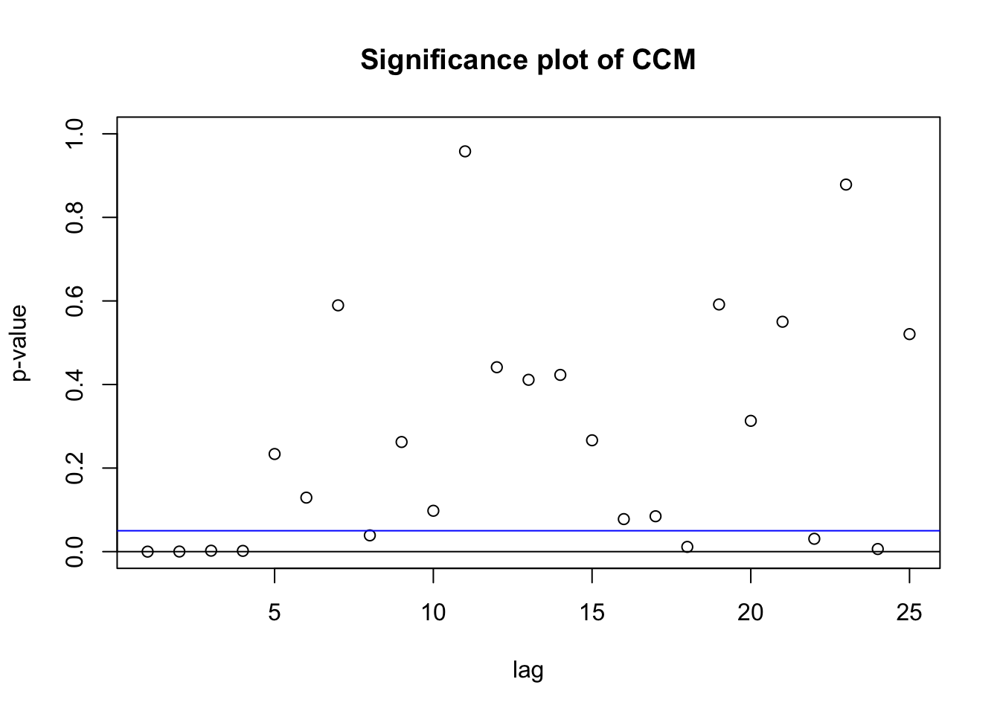
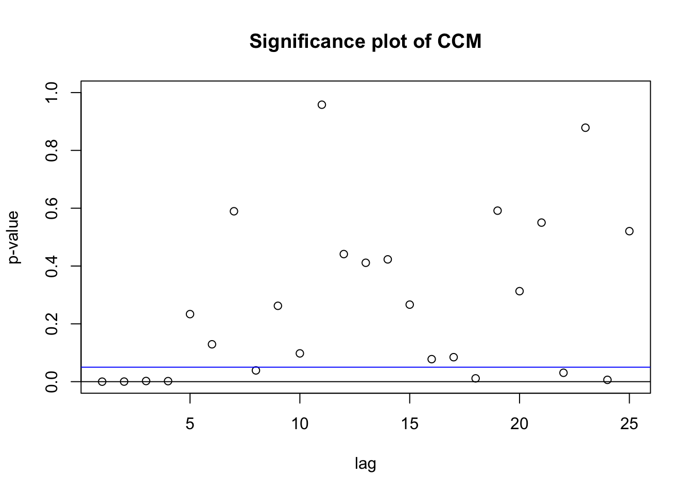
- We further consider fitting a VARMA model to the series \(\mathbf{X}_t\).
## Number of parameters: 18
## initial estimates: 1.167 1.089 -0.3236 -0.1116 0.4118 0.1927 0.1568 0.118 0.7276 -0.899 -1.604 0.4924 0.0041 -0.1953 -0.138 -0.0868 -0.1691 -0.4191
## Par. lower-bounds: 0.9623 0.4671 -0.6495 -0.1855 0.1865 0.0748 0.0196 -0.3005 0.5085 -1.158 -2.351 0.1116 -0.0896 -0.4657 -0.2758 -0.2609 -0.6712 -0.6751
## Par. upper-bounds: 1.371 1.712 0.0023 -0.0377 0.6371 0.3107 0.2941 0.5364 0.9467 -0.64 -0.8567 0.8731 0.0978 0.075 -2e-04 0.0873 0.3331 -0.1632
## Final Estimates: 1.332 1.373 -0.5913 -0.129 0.3544 0.2297 0.1203 0.1012 0.7905 -1.019 -1.758 0.7369 0.02455 -0.0837 -0.1993 -0.1026 -0.2638 -0.4717
##
## Coefficient(s):
## Estimate Std. Error t value Pr(>|t|)
## gdprate 1.33178 0.11647 11.434 < 2e-16 ***
## unemdiff 1.37330 0.36526 3.760 0.000170 ***
## cpirate -0.59130 0.19045 -3.105 0.001904 **
## gdprate -0.12900 0.04815 -2.679 0.007388 **
## unemdiff 0.35437 0.13210 2.683 0.007304 **
## cpirate 0.22966 0.07780 2.952 0.003160 **
## gdprate 0.12026 0.04966 2.422 0.015455 *
## unemdiff 0.10122 0.16779 0.603 0.546348
## cpirate 0.79055 0.08226 9.611 < 2e-16 ***
## -1.01903 0.13581 -7.503 6.24e-14 ***
## -1.75792 0.43938 -4.001 6.31e-05 ***
## 0.73690 0.22074 3.338 0.000843 ***
## 0.02455 0.05988 0.410 0.681827
## -0.08370 0.14973 -0.559 0.576135
## -0.19928 0.08924 -2.233 0.025548 *
## -0.10262 0.06640 -1.545 0.122233
## -0.26379 0.23668 -1.115 0.265059
## -0.47173 0.10349 -4.558 5.16e-06 ***
## ---
## Signif. codes:
## 0 '***' 0.001 '**' 0.01 '*' 0.05 '.' 0.1 ' ' 1
## ---
## Estimates in matrix form:
## AR coefficient matrix
## AR( 1 )-matrix
## [,1] [,2] [,3]
## [1,] 1.332 1.373 -0.591
## [2,] -0.129 0.354 0.230
## [3,] 0.120 0.101 0.791
## MA coefficient matrix
## MA( 1 )-matrix
## [,1] [,2] [,3]
## [1,] 1.0190 1.7579 -0.737
## [2,] -0.0245 0.0837 0.199
## [3,] 0.1026 0.2638 0.472
##
## Residuals cov-matrix:
## [,1] [,2] [,3]
## [1,] 0.8230 -0.17354 0.14418
## [2,] -0.1735 0.11549 -0.01724
## [3,] 0.1442 -0.01724 0.38361
## ----
## aic= -3.637
## bic= -3.402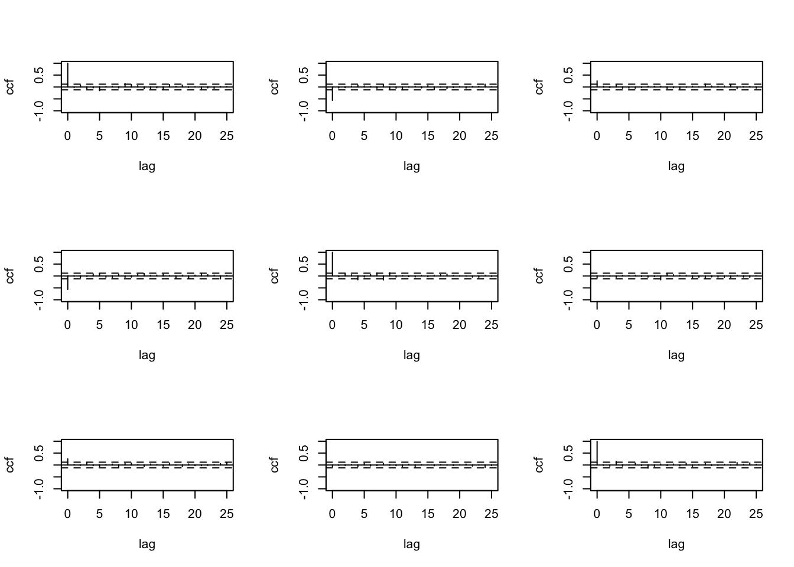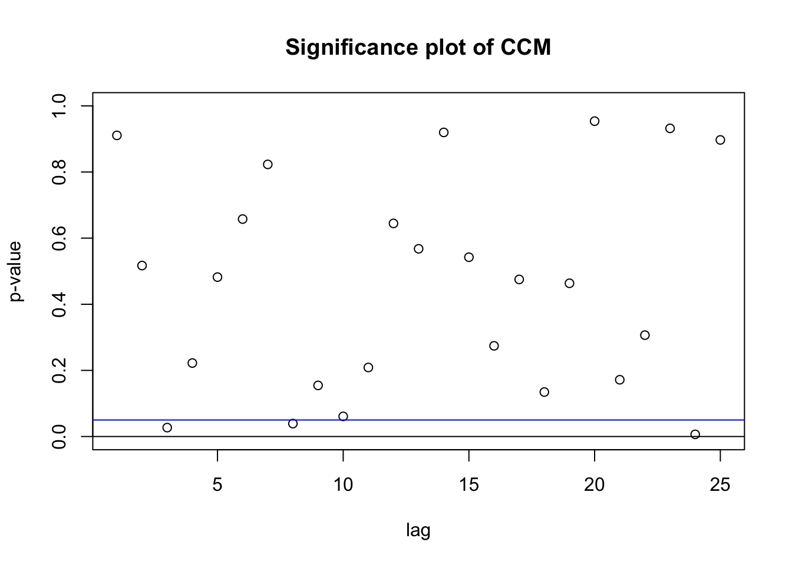
5.4.2 Order Selection
If you want some help selecting p and q
## Number of parameters: 9
## initial estimates: 0.7327 0.1979 0.251 -0.077 0.3654 0.1182 0.2389 0.2681 0.5174
## Par. lower-bounds: 0.6185 -0.1504 0.0784 -0.1156 0.2477 0.0599 0.1651 0.0429 0.4058
## Par. upper-bounds: 0.8469 0.5463 0.4237 -0.0384 0.483 0.1765 0.3127 0.4933 0.629
## Final Estimates: 0.7115 0.1508 0.2786 -0.06924 0.3811 0.1073 0.2309 0.2544 0.5149
##
## Coefficient(s):
## Estimate Std. Error t value Pr(>|t|)
## gdprate 0.71155 0.05652 12.590 < 2e-16 ***
## unemdiff 0.15075 0.17319 0.870 0.384046
## cpirate 0.27860 0.08492 3.281 0.001035 **
## gdprate -0.06924 0.01926 -3.595 0.000324 ***
## unemdiff 0.38114 0.05902 6.458 1.06e-10 ***
## cpirate 0.10733 0.02894 3.709 0.000208 ***
## gdprate 0.23086 0.03713 6.217 5.07e-10 ***
## unemdiff 0.25437 0.11379 2.235 0.025392 *
## cpirate 0.51490 0.05580 9.228 < 2e-16 ***
## ---
## Signif. codes:
## 0 '***' 0.001 '**' 0.01 '*' 0.05 '.' 0.1 ' ' 1
## ---
## Estimates in matrix form:
## AR coefficient matrix
## AR( 1 )-matrix
## [,1] [,2] [,3]
## [1,] 0.7115 0.151 0.279
## [2,] -0.0692 0.381 0.107
## [3,] 0.2309 0.254 0.515
##
## Residuals cov-matrix:
## [,1] [,2] [,3]
## [1,] 1.0500 -0.16146 0.20992
## [2,] -0.1615 0.12194 0.00262
## [3,] 0.2099 0.00262 0.45331
## ----
## aic= -3.138
## bic= -3.02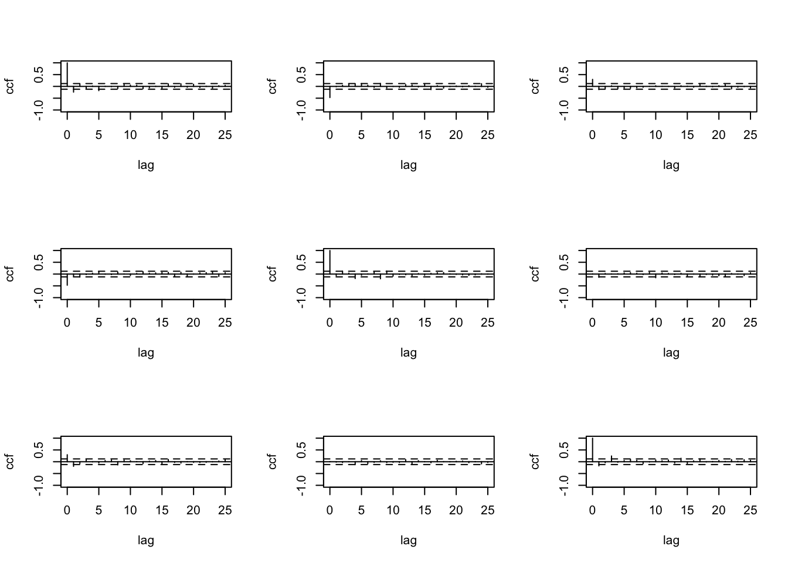
Generating a VARMA Process
set.seed(1234)
p1 <- matrix(c(0.2,-0.6,0.3,1,1),2,2)
sig <- matrix(c(4,0.8,0.8,1),2,2)
th1 <- matrix(c(-0.5,0,0,-0.6),2,2)
m1 <- VARMAsim(1000, arlags = c(1), malags = c(1), phi = p1,theta = th1, sigma = sig)
zt <- m1$series
head(zt)## [,1] [,2]
## [1,] -2.7473 -2.33168
## [2,] -3.5389 -1.84248
## [3,] -0.9314 -0.04607
## [4,] 2.8290 -0.01222
## [5,] 0.8131 -2.33142
## [6,] -3.9268 -3.60356## Number of parameters: 4
## initial estimates: 0.4422 0.2961 -0.5508 1.038
## Par. lower-bounds: 0.3916 0.2557 -0.5769 1.017
## Par. upper-bounds: 0.4927 0.3364 -0.5248 1.059
## Final Estimates: 0.4418 0.2976 -0.5501 1.039
##
## Coefficient(s):
## Estimate Std. Error t value Pr(>|t|)
## [1,] 0.44176 0.02525 17.50 <2e-16 ***
## [2,] 0.29755 0.02018 14.74 <2e-16 ***
## [3,] -0.55007 0.01299 -42.35 <2e-16 ***
## [4,] 1.03859 0.01038 100.04 <2e-16 ***
## ---
## Signif. codes:
## 0 '***' 0.001 '**' 0.01 '*' 0.05 '.' 0.1 ' ' 1
## ---
## Estimates in matrix form:
## AR coefficient matrix
## AR( 1 )-matrix
## [,1] [,2]
## [1,] 0.442 0.298
## [2,] -0.550 1.039
##
## Residuals cov-matrix:
## [,1] [,2]
## [1,] 4.7286 0.9683
## [2,] 0.9683 1.2513
## ----
## aic= 1.613
## bic= 1.633## selected order: aic = 6
## selected order: bic = 3
## selected order: hq = 3
## Summary table:
## p AIC BIC HQ M(p) p-value
## [1,] 0 4.642 4.642 4.642 0.0000 0.0000
## [2,] 1 1.617 1.637 1.624 2982.6949 0.0000
## [3,] 2 1.326 1.365 1.341 293.4415 0.0000
## [4,] 3 1.257 1.316 1.279 75.6926 0.0000
## [5,] 4 1.250 1.328 1.280 14.4993 0.0059
## [6,] 5 1.253 1.351 1.290 4.5802 0.3331
## [7,] 6 1.243 1.361 1.288 17.4699 0.0016
## [8,] 7 1.244 1.381 1.296 6.9209 0.1401
## [9,] 8 1.244 1.401 1.304 7.4485 0.1140
## [10,] 9 1.249 1.426 1.316 3.2249 0.5209
## [11,] 10 1.254 1.450 1.328 3.5016 0.4776
## [12,] 11 1.259 1.475 1.341 2.4851 0.6473
## [13,] 12 1.266 1.501 1.355 1.1209 0.8909
## [14,] 13 1.273 1.528 1.370 0.6265 0.96015.5 Granger Causality Tests
- Let \(F_t\) be the available information at time \(t\)
- Let \(F_{-i,t}\) be \(F_t\) where all information regarding the the \(i\)th components, \(X_{it}\) removed.
- Consider the bivariate VAR(1) model
\[ \begin{pmatrix} X_{1t} \\ X_{2t} \end{pmatrix} = \begin{pmatrix} \phi_{10} \\ \phi_{20} \end{pmatrix} + \begin{pmatrix} \phi_{11} & \phi_{12}\\ \phi_{21} & \phi_{22} \end{pmatrix} \begin{pmatrix} X_{1,t-1} \\ X_{2,t-1} \end{pmatrix} + \begin{pmatrix} \epsilon_{1t} \\ \epsilon_{2t} \end{pmatrix}. \]
- Consider the \(h\)-step ahead forecast \(X_t(h)\) based on \(F_t\) and the associated forecast error \(e_t(h)\).
- Let \(X_{j,t+h}|F_{-i,t}\) be the \(h\)-step ahead prediction of \(X_{j,t+h}\) based on \(F_{-i,t}\).
- Let \(e_{j,t+h}|F_{-i,t}\) be the associated forecast error where \(i \neq j.\)
- We say that \(X_{1t}\) causes \(X_{2t}\), if the bivariate forecast for \(X_{2t}\) is more accurate than its univariate forecast.
- That is, \(X_{1t}\) causes \(X_{2t}\) if \[Var[e_{2t}(h)]<Var[e_{2,t+h}|F_{-1,t}].\]
5.5.1 Test for Granger causality
- VAR models can be used to investigate lead-lag behaviour.
- The bivariate VAR(p) model can be expressed as
\[x_t = c_1+\sum_{i=1}^p\alpha_{1i}x_{t-i}+ \sum_{i=1}^p\beta_{1i}y_{t-i}+\epsilon_{1t}\]
\[y_t = c_2+\sum_{i=1}^p\alpha_{2i}x_{t-i}+ \sum_{i=1}^p\beta_{2i}y_{t-i}+\epsilon_{2t}\]
The test for Granger causality from \(x\) to \(y\) is an F-test for the joint significance of \(\alpha_{21},\dots, \alpha_{2p},\) in an OLS regression.
Similarly, Granger causality from \(y\) to \(x\) is an F-test for the joint significance of \(\beta_{11},\dots, \beta_{1p}\).
Test for Granger Causality in R
data3 <- data %>% as_tibble() %>%
select("gdprate", "cpirate") %>%
as.matrix()
data3 <- ts(data = data3, start=c(1948,1), frequency = 4 )
head(data3)## gdprate cpirate
## [1,] NA NA
## [2,] 2.5262 2.76596
## [3,] 2.4185 0.86957
## [4,] 0.4147 -1.27258
## [5,] -1.8834 -0.58212
## [6,] -1.3357 0.04182## Granger causality test
##
## Model 1: gdprate ~ Lags(gdprate, 1:3) + Lags(cpirate, 1:3)
## Model 2: gdprate ~ Lags(gdprate, 1:3)
## Res.Df Df F Pr(>F)
## 1 268
## 2 271 -3 2.35 0.072 .
## ---
## Signif. codes:
## 0 '***' 0.001 '**' 0.01 '*' 0.05 '.' 0.1 ' ' 1## Granger causality test
##
## Model 1: cpirate ~ Lags(cpirate, 1:3) + Lags(gdprate, 1:3)
## Model 2: cpirate ~ Lags(cpirate, 1:3)
## Res.Df Df F Pr(>F)
## 1 268
## 2 271 -3 4.69 0.0033 **
## ---
## Signif. codes:
## 0 '***' 0.001 '**' 0.01 '*' 0.05 '.' 0.1 ' ' 1## Granger causality test
##
## Model 1: cpirate ~ Lags(cpirate, 1:3) + Lags(gdprate, 1:3)
## Model 2: cpirate ~ Lags(cpirate, 1:3)
## Res.Df Df F Pr(>F)
## 1 268
## 2 271 -3 4.69 0.0033 **
## ---
## Signif. codes:
## 0 '***' 0.001 '**' 0.01 '*' 0.05 '.' 0.1 ' ' 1## Granger causality test
##
## Model 1: data3[, 2] ~ Lags(data3[, 2], 1:3) + Lags(data3[, 1], 1:3)
## Model 2: data3[, 2] ~ Lags(data3[, 2], 1:3)
## Res.Df Df F Pr(>F)
## 1 268
## 2 271 -3 4.69 0.0033 **
## ---
## Signif. codes:
## 0 '***' 0.001 '**' 0.01 '*' 0.05 '.' 0.1 ' ' 1Using MTS package
Perform VAR(p) and constrained VAR(p) estimations to test the Granger causality. It uses likelihood ratio and asymptotic chi-square.
data3 <- data %>% as_tibble() %>%
select("gdprate", "cpirate") %>%
drop_na() %>%
as.matrix()
MTS::GrangerTest(data3,p=3,include.mean=T,locInput=c(1))## Number of targeted zero parameters: 3
## Chi-square test for Granger Causality and p-value: 7.065 0.06986
## Constant term:
## Estimates: 0.7174 0.004604
## Std.Error: 0.1149 0.0751
## AR coefficient matrix
## AR( 1 )-matrix
## [,1] [,2]
## [1,] 0.4498 0.000
## [2,] 0.0924 0.315
## standard error
## [,1] [,2]
## [1,] 0.0600 0.000
## [2,] 0.0407 0.059
## AR( 2 )-matrix
## [,1] [,2]
## [1,] 0.2053 0.000
## [2,] 0.0198 0.117
## standard error
## [,1] [,2]
## [1,] 0.0647 0.0000
## [2,] 0.0429 0.0617
## AR( 3 )-matrix
## [,1] [,2]
## [1,] -0.1135 0.000
## [2,] 0.0679 0.236
## standard error
## [,1] [,2]
## [1,] 0.060 0.0000
## [2,] 0.041 0.0575
##
## Residuals cov-mtx:
## [,1] [,2]
## [1,] 0.8791 0.1577
## [2,] 0.1577 0.3619
##
## det(SSE) = 0.2932
## AIC = -1.162
## BIC = -1.045
## HQ = -1.115- Different researches show different results about the causality between economic growth and inflation.
- Fisher (1993) shows that causality goes from inflation to economic growth.
- In contrast to Fisher’s findings, Umaru and Zubariu (2011) found that Nigeria’s GDP causes inflation and not inflation causing GDP using Granger causality test.
- Studies also show that the causality relation can be different in the short run and in the long run.
- A study conducted by Datta and Chanda(2011) on Malaysia shows that causality exist between inflation and economic growth in the short run and direction of causality is from inflation to economic growth but in the long run economic growth causes inflation.
5.6 Cointegration
This chapter is heavily based on Stock and Watson (2015).
- Two or more time series with stochastic trends can move together very closely over the long run.
- Two or more time series that have a common stochastic trend are said to be cointegrated.
Definition (Stock and Watson (2015))
Suppose \(X_t\) and \(Y_t\) are integrated of order one. If, for some coefficient \(\theta\), \(Y_t-\theta X_t\) is integrated of order zero, then \(X_t\) and \(Y_t\) are said to be cointegrated. The coefficient \(\theta\) is called the cointegrating coefficient.
That is, \(X_t\) and \(Y_t\) are \(I(1)\) and if there is a \(\theta\) such that \(Y_t-\theta X_t\) is \(I(0)\), \(X_t\) and \(Y_t\) are cointegrated
Put differently, cointegration of
\(X_t\) and \(Y_t\) means that \(X_t\) and \(Y_t\) have the same or a common stochastic trend and this trend can be eliminated by taking a specific difference of the series such that the resulting series is stationary.R functions for cointegration analysis are implemented in the package
urca
Example
Consider the the relation between 3-month treasury bills, U.S. 10-years treasury bonds and the spread in their interest rates.
- Interest rates on long-term and short term treasury bonds are closely linked to macroeconomic conditions.
- While interest rates on both types of bonds have the same long-run tendencies, they behave quite differently in the short run.
- The difference in interest rates of two bonds with distinct maturity is called the term spread.
# AER package Provides functions, data sets,
# examples, and demos for Applied Econometrics
library(AER)
# A quarterly multiple time series from 1947(1) to 2004(4) with 2 variables, GDP and T-bill
data("USMacroSW")
# tbill: 3-months Treasury bills interest rate
# tbond: 10-years Treasury bonds interest rate
USMacroSW <- USMacroSW %>% as_tsibble(pivot_longer = FALSE) %>%
select(index, tbill, tbond) %>%
mutate(TSpread = tbond - tbill) %>%
pivot_longer(cols = tbill:TSpread)
p <- USMacroSW %>% autoplot(value)
print(p)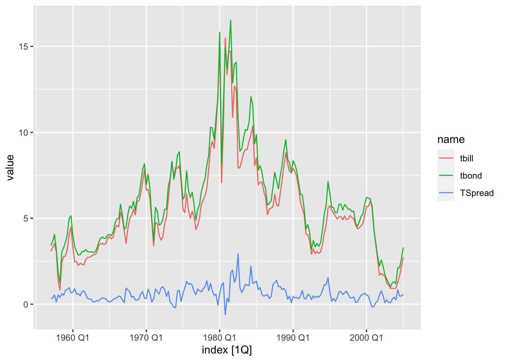
- The figure suggests that long-term and short-term interest rates are cointegrated as both interest series seem to have the same long-run behavior.
- They share a common stochastic trend.
- The term spread, which is obtained by taking the difference between long-term and short-term interest rates, seems to be stationary.
5.6.1 Testing for Cointegration
- There are three ways to decide whether two variables can plausibly be modeled as cointegrated
- use expert knowledge and economic theory
- graph the series and check whether they appear to have a common stochastic trend
- perform statistical tests for cointegration
- The unit root testing procedures discussed so far can be extended to test for cointegration.
- The insight on which these tests are based is that if two series \(Y_t\) and \(X_t\) are cointegrated, the series obtained by taking the difference \(Y_t-\theta X_t\) must be stationary.
- If the series are not cointegrated,
\(Y_t-\theta X_t\) is nonstationary [\(I(1)\)]. - The hypothesis that \(Y_t\) and \(X_t\) are not cointegrated [i.e. \(Y_t-\theta X_t\) is \(I(1)\) ] therefore can be tested by testing the null hypothesis that \(Y_t-\theta X_t\) has a unit root.
- If the hypothesis is rejected, then \(Y_t\) and \(X_t\) can be modeled as cointegrated.
- The details of this test depend on whether the cointegrating coefficient \(\theta\) is known.
5.6.1.1 Testing for cointegration when \(\theta\) is known
- In some situations expert knowledge or economic theory can be used to suggest values of \(\theta\).
- When \(\theta\) is known, the Dickey-Fuller and DF-GLS unit root tests can be used to test for cointegration by first constructing the series \(z_t=Y_t-\theta X_t\) and then testing the null hypothesis that \(z_t\) has a unit autoregressive root.
5.6.1.2 Testing for cointegration when \(\theta\) is unknown
- If \(\theta\) is unknown, it must be estimated before the unit root test can be applied.
- This can be done by first estimating the cointegrating coefficient \(\theta\) by OLS estimation of the regression
\[Y_t = \alpha+\theta X_t+z_t.\]
- In the second step, a Dickey-Fuller \(t\)-test (with an intercept but no time trend) is used to test for a unit root in the residual from this regression, \(\hat{z_t}.\)
- This two-step procedure is called the Engle-Granger Augmented Dickey-Fuller test for cointegration or EG-ADF test.
Extensions to Multiple Cointegrated Variables
- If there are three variables, \(Y_t\), \(X_{1t}\) and \(X_{2t}\), each of which is \(I(1)\), then they are cointegrated with cointegrating coefficients \(\theta_1\) and \(\theta_2\) if \(Y_t-\theta_1 X_{1t} -\theta_2X_{2t}\) is stationary.
- When there are three or more variables, there can be multiple cointegrating relationships.
- The EG-ADF procedure for testing a single cointegrating relationship among multiple variables is the same as for the case of two variables, except that the regression equation is modified so that both \(X_{1t}\) and \(X_{2t}\) are regressors.
- Tests for multiple cointegrating relationships can be performed using the system methods, such as Johansen’s (1988) method.
5.6.2 Vector Error Correction Models
- In the previous chapters, we eliminated the stochastic trend in an \(I(1)\) series \(Y_t\) by computing its first difference, \(\Delta Y_t.\)
- The problem created by stochastic trends were then avoided by using \(\Delta Y_t\) instead of \(Y_t\) in time series regression.
- However, if \(X_t\) and \(Y_t\) are cointegrated, there is another way to eliminate the common trend from the difference.
- Because the term \(Y_t - \theta X_t\) is stationary, it too can be used in regression analysis.
- In fact, if \(X_t\) and \(Y_t\) are cointegrated, the first differences of \(X_t\) and \(Y_t\) can be modeled using a VAR, augmented by including \(Y_{t-1} - \theta X_{t-1}\) as an additional regressor:
\[\Delta Y_t = \beta_{10} +\beta_{11}\Delta Y_{t-1}+\dots+\beta_{1p}\Delta Y_{t-p}+\gamma{11}\Delta X_{t-1}+\dots+\gamma_{1p}\Delta X_{t-p}+\alpha_1(Y_{t-1}-\theta X_{t-1}) + u_{1t}\]
\[\Delta X_t = \beta_{20} +\beta_{21}\Delta Y_{t-1}+\dots+\beta_{2p}\Delta Y_{t-p}+\gamma{21}\Delta X_{t-1}+\dots+\gamma_{2p}\Delta X_{t-p}+\alpha_2(Y_{t-1}-\theta X_{t-1}) + u_{2t}\]
- The term \(Y_t - \theta X_t\) is called the error correction term.
- The combined model in the above two equations is called a vector error correction model (VECM).
- In a VECM, past values of \(Y_t - \theta X_t\), help to predict future values of \(\Delta Y_t\) and/or \(\Delta X_t\).
Example: Application to Interest Rates
- According to the visual representation, the spread of 10-year and 3-month interest rates looks stationary
It suggests that long-term and short-term interest rates are cointegrated with a cointegration coefficient of \(\theta = 1.\)
- We continue by using formal tests (the ADF and the DF-GLS test) to see whether the individual interest rate series are integrated and if their difference is stationary (for now, we assume that \(\theta = 1\) is known).
- Both is conveniently done by using the functions
ur.df()for computation of the ADF test andur.ers()for conducting the DF-GLS test. - We employ models that include a drift term. (If
typeargument is set to “none” neither an intercept nor a trend is included in the test regression. If it is set to “drift” an intercept is added and if it is set to “trend” both an intercept and a trend is added.) We set the maximum lag order to 5 and use the AIC for selection of the optimal lag length.
library(urca)
# Test for nonstationarity of 3-month treasury bills using ADF test
data("USMacroSW")
TB3MS <- USMacroSW[,"tbill"] %>% as.ts()
r1 <- ur.df(window(TB3MS, c(1957, 1), c(2005, 1)),
lags = 5,
selectlags = "AIC",
type = "drift")
summary(r1)##
## ###############################################
## # Augmented Dickey-Fuller Test Unit Root Test #
## ###############################################
##
## Test regression drift
##
##
## Call:
## lm(formula = z.diff ~ z.lag.1 + 1 + z.diff.lag)
##
## Residuals:
## Min 1Q Median 3Q Max
## -7.114 -0.386 -0.060 0.481 4.100
##
## Coefficients:
## Estimate Std. Error t value Pr(>|t|)
## (Intercept) 0.3962 0.1712 2.31 0.0218 *
## z.lag.1 -0.0696 0.0279 -2.49 0.0135 *
## z.diff.lag1 -0.0953 0.0735 -1.30 0.1964
## z.diff.lag2 -0.1906 0.0710 -2.69 0.0079 **
## z.diff.lag3 0.2386 0.0715 3.34 0.0010 **
## ---
## Signif. codes:
## 0 '***' 0.001 '**' 0.01 '*' 0.05 '.' 0.1 ' ' 1
##
## Residual standard error: 1.02 on 182 degrees of freedom
## Multiple R-squared: 0.165, Adjusted R-squared: 0.147
## F-statistic: 9.01 on 4 and 182 DF, p-value: 1.16e-06
##
##
## Value of test-statistic is: -2.494 3.123
##
## Critical values for test statistics:
## 1pct 5pct 10pct
## tau2 -3.46 -2.88 -2.57
## phi1 6.52 4.63 3.81# Test for nonstationarity of 10-years treasury bonds using ADF test
TB10YS <- USMacroSW[,"tbond"] %>% as.ts()
r1 <- ur.df(window(TB10YS, c(1957, 1), c(2005, 1)),
lags = 6,
selectlags = "AIC",
type = "drift")
summary(r1)##
## ###############################################
## # Augmented Dickey-Fuller Test Unit Root Test #
## ###############################################
##
## Test regression drift
##
##
## Call:
## lm(formula = z.diff ~ z.lag.1 + 1 + z.diff.lag)
##
## Residuals:
## Min 1Q Median 3Q Max
## -6.676 -0.475 -0.016 0.513 4.581
##
## Coefficients:
## Estimate Std. Error t value Pr(>|t|)
## (Intercept) 0.3592 0.1799 2.00 0.047 *
## z.lag.1 -0.0578 0.0266 -2.17 0.031 *
## z.diff.lag1 -0.1335 0.0741 -1.80 0.073 .
## z.diff.lag2 -0.1123 0.0737 -1.52 0.129
## z.diff.lag3 0.1665 0.0726 2.29 0.023 *
## ---
## Signif. codes:
## 0 '***' 0.001 '**' 0.01 '*' 0.05 '.' 0.1 ' ' 1
##
## Residual standard error: 1.03 on 181 degrees of freedom
## Multiple R-squared: 0.0999, Adjusted R-squared: 0.08
## F-statistic: 5.02 on 4 and 181 DF, p-value: 0.000733
##
##
## Value of test-statistic is: -2.175 2.365
##
## Critical values for test statistics:
## 1pct 5pct 10pct
## tau2 -3.46 -2.88 -2.57
## phi1 6.52 4.63 3.81- Note that the function
ur.df()reports two test statistics when there is a drift in the ADF regression. - The first of which (the one we are interested in here) is the t-statistic for the test that the coefficient on the first lag of the series is 0.
- The second one is the t-statistic for the hypothesis test that the drift term equals 0.
Test for nonstationarity using DF-GLS test
# Test for nonstationarity of 3-month treasury bills using DF-GLS test
r1 <- ur.ers(window(TB3MS, c(1957, 1), c(2005, 1)),
model = "constant",
lag.max = 6)
summary(r1)##
## ###############################################
## # Elliot, Rothenberg and Stock Unit Root Test #
## ###############################################
##
## Test of type DF-GLS
## detrending of series with intercept
##
##
## Call:
## lm(formula = dfgls.form, data = data.dfgls)
##
## Residuals:
## Min 1Q Median 3Q Max
## -7.295 -0.280 0.109 0.544 3.864
##
## Coefficients:
## Estimate Std. Error t value Pr(>|t|)
## yd.lag -0.04945 0.02314 -2.14 0.0340 *
## yd.diff.lag1 -0.09776 0.07449 -1.31 0.1910
## yd.diff.lag2 -0.22004 0.07462 -2.95 0.0036 **
## yd.diff.lag3 0.24177 0.07600 3.18 0.0017 **
## yd.diff.lag4 0.00428 0.07681 0.06 0.9556
## yd.diff.lag5 0.13176 0.07384 1.78 0.0761 .
## yd.diff.lag6 0.08177 0.07367 1.11 0.2686
## ---
## Signif. codes:
## 0 '***' 0.001 '**' 0.01 '*' 0.05 '.' 0.1 ' ' 1
##
## Residual standard error: 1.02 on 179 degrees of freedom
## Multiple R-squared: 0.17, Adjusted R-squared: 0.137
## F-statistic: 5.22 on 7 and 179 DF, p-value: 1.93e-05
##
##
## Value of test-statistic is: -2.137
##
## Critical values of DF-GLS are:
## 1pct 5pct 10pct
## critical values -2.58 -1.94 -1.62# Test for nonstationarity of 10-years treasury bonds using DF-GLS test
r1 <- ur.ers(window(TB10YS, c(1957, 1), c(2005, 1)),
model = "constant",
lag.max = 6)
summary(r1)##
## ###############################################
## # Elliot, Rothenberg and Stock Unit Root Test #
## ###############################################
##
## Test of type DF-GLS
## detrending of series with intercept
##
##
## Call:
## lm(formula = dfgls.form, data = data.dfgls)
##
## Residuals:
## Min 1Q Median 3Q Max
## -6.749 -0.346 0.102 0.612 4.565
##
## Coefficients:
## Estimate Std. Error t value Pr(>|t|)
## yd.lag -0.0384 0.0217 -1.77 0.078 .
## yd.diff.lag1 -0.1494 0.0746 -2.00 0.047 *
## yd.diff.lag2 -0.1117 0.0754 -1.48 0.140
## yd.diff.lag3 0.1583 0.0755 2.10 0.037 *
## yd.diff.lag4 0.0594 0.0760 0.78 0.435
## yd.diff.lag5 -0.0133 0.0751 -0.18 0.860
## yd.diff.lag6 0.0510 0.0737 0.69 0.490
## ---
## Signif. codes:
## 0 '***' 0.001 '**' 0.01 '*' 0.05 '.' 0.1 ' ' 1
##
## Residual standard error: 1.03 on 179 degrees of freedom
## Multiple R-squared: 0.0962, Adjusted R-squared: 0.0609
## F-statistic: 2.72 on 7 and 179 DF, p-value: 0.0104
##
##
## Value of test-statistic is: -1.773
##
## Critical values of DF-GLS are:
## 1pct 5pct 10pct
## critical values -2.58 -1.94 -1.62We conclude that it is plausible to model both interest rate series as I(1).
Next, we apply the ADF and the DF-GLS test to test for nonstationarity of the term spread series, which means we test for non-cointegration of long-term and short-term interest rates.
# Test if term spread is stationairy
#(cointegration of interest rates) using ADF
r1 <- ur.df(window(TB10YS, c(1957, 1), c(2005, 1)) - window(TB3MS, c(1957, 1), c(2005 ,1)),
lags = 6,
selectlags = "AIC",
type = "drift")
summary(r1)##
## ###############################################
## # Augmented Dickey-Fuller Test Unit Root Test #
## ###############################################
##
## Test regression drift
##
##
## Call:
## lm(formula = z.diff ~ z.lag.1 + 1 + z.diff.lag)
##
## Residuals:
## Min 1Q Median 3Q Max
## -1.6094 -0.1929 -0.0407 0.1737 1.7226
##
## Coefficients:
## Estimate Std. Error t value Pr(>|t|)
## (Intercept) 0.2324 0.0483 4.81 3.1e-06 ***
## z.lag.1 -0.3796 0.0661 -5.74 3.8e-08 ***
## z.diff.lag -0.0535 0.0738 -0.73 0.47
## ---
## Signif. codes:
## 0 '***' 0.001 '**' 0.01 '*' 0.05 '.' 0.1 ' ' 1
##
## Residual standard error: 0.359 on 183 degrees of freedom
## Multiple R-squared: 0.203, Adjusted R-squared: 0.194
## F-statistic: 23.3 on 2 and 183 DF, p-value: 9.85e-10
##
##
## Value of test-statistic is: -5.742 16.49
##
## Critical values for test statistics:
## 1pct 5pct 10pct
## tau2 -3.46 -2.88 -2.57
## phi1 6.52 4.63 3.81# test if term spread is stationairy
# (cointegration of interest rates) using DF-GLS test
r1 <- ur.ers(window(TB10YS, c(1957, 1), c(2005, 1)) - window(TB3MS, c(1957, 1), c(2005, 1)),
model = "constant",
lag.max = 6)
summary(r1)##
## ###############################################
## # Elliot, Rothenberg and Stock Unit Root Test #
## ###############################################
##
## Test of type DF-GLS
## detrending of series with intercept
##
##
## Call:
## lm(formula = dfgls.form, data = data.dfgls)
##
## Residuals:
## Min 1Q Median 3Q Max
## -1.5303 -0.1333 0.0215 0.1957 1.6996
##
## Coefficients:
## Estimate Std. Error t value Pr(>|t|)
## yd.lag -0.21283 0.07299 -2.92 0.004 **
## yd.diff.lag1 -0.19499 0.09027 -2.16 0.032 *
## yd.diff.lag2 -0.16075 0.08797 -1.83 0.069 .
## yd.diff.lag3 -0.09994 0.08723 -1.15 0.253
## yd.diff.lag4 -0.00339 0.08454 -0.04 0.968
## yd.diff.lag5 -0.12079 0.07981 -1.51 0.132
## yd.diff.lag6 -0.12379 0.07432 -1.67 0.098 .
## ---
## Signif. codes:
## 0 '***' 0.001 '**' 0.01 '*' 0.05 '.' 0.1 ' ' 1
##
## Residual standard error: 0.362 on 179 degrees of freedom
## Multiple R-squared: 0.206, Adjusted R-squared: 0.175
## F-statistic: 6.64 on 7 and 179 DF, p-value: 5.41e-07
##
##
## Value of test-statistic is: -2.916
##
## Critical values of DF-GLS are:
## 1pct 5pct 10pct
## critical values -2.58 -1.94 -1.62- Both tests reject the hypothesis of nonstationarity of the term spread series at the 1% level of significance, which is strong evidence in favor of the hypothesis that the term spread is stationary, implying cointegration of long-term and short-term interest rates.
- Since theory suggests that \(\theta = 1\), there is no need to estimate \(\theta\).
- Therefore, it is not necessary to use the EG-ADF test which allows \(\theta\) to be unknown.
- However, since it is instructive to do so, we compute this test statistic. The first-stage OLS regression is
\[TB10YS_t = \beta_0 + \beta_1 TB3MS_t + z_t\]
library(dynlm)
# Estimate first-stage regression of EG-ADF test
FS_EGADF <- dynlm(window(TB10YS, c(1957, 1), c(2005, 1)) ~
window(TB3MS, c(1957, 1), c(2005, 1)))
FS_EGADF##
## Time series regression with "ts" data:
## Start = 1957(1), End = 2005(1)
##
## Call:
## dynlm(formula = window(TB10YS, c(1957, 1), c(2005, 1)) ~ window(TB3MS,
## c(1957, 1), c(2005, 1)))
##
## Coefficients:
## (Intercept)
## 0.365
## window(TB3MS, c(1957, 1), c(2005, 1))
## 1.044- Thus, we have
\[\hat{TB10YS_t} = 0.365 + 1.044 \times TB3MS_t\]
where \(\hat{\theta} = 1.044.\)
- Next, we take the residual series \(\hat{z_t}\) and compute the ADF test statistic.
# compute the residuals
z_hat <- resid(FS_EGADF)
# compute the ADF test statistic
r1 <- ur.df(z_hat, lags = 6, type = "none", selectlags = "AIC")
summary(r1)##
## ###############################################
## # Augmented Dickey-Fuller Test Unit Root Test #
## ###############################################
##
## Test regression none
##
##
## Call:
## lm(formula = z.diff ~ z.lag.1 - 1 + z.diff.lag)
##
## Residuals:
## Min 1Q Median 3Q Max
## -1.8904 -0.1775 -0.0307 0.1742 1.8503
##
## Coefficients:
## Estimate Std. Error t value Pr(>|t|)
## z.lag.1 -0.4649 0.0712 -6.53 6.3e-10 ***
## z.diff.lag -0.0043 0.0737 -0.06 0.95
## ---
## Signif. codes:
## 0 '***' 0.001 '**' 0.01 '*' 0.05 '.' 0.1 ' ' 1
##
## Residual standard error: 0.364 on 184 degrees of freedom
## Multiple R-squared: 0.234, Adjusted R-squared: 0.225
## F-statistic: 28 on 2 and 184 DF, p-value: 2.35e-11
##
##
## Value of test-statistic is: -6.528
##
## Critical values for test statistics:
## 1pct 5pct 10pct
## tau1 -2.58 -1.95 -1.62- Sometimes lower power of the EG-ADF test can be observed due to the estimation of \(\theta.\)
- When \(\theta =1\) is the correct value, we expect the power of the ADF test for a unit root in the residuals series \(\hat{z}= TB10YS_t-TB3MS_t\) to be higher than when some estimate \(\hat{\theta}\) is used.
5.6.2.1 Estimation of Cointegrating coefficient using Dynamic OLS Estimator (DOLS)
- If \(X_t\) and \(Y_t\) are cointegrated, then the OLS estimator of the coefficient in the cointegrating regression
\[Y_t=\alpha +\theta X_t+z_t\]
is consistent.
- However, in general the OLS estimator has a non-normal distribution and therefore the inferences derived from its t-statistics can produce misleading results. -There are many other alternative estimators of the cointegrating coefficient, such as dynamic OLS (DOLS) estimator (Stock and Watson, 1993).
- The DOLS is a modified version of the above equation that includes, past, present and future values of the change in \(X_t:\)
\[Y_t=\beta_0 +\theta X_t+\sum_{j=-p}^{p}\delta_j\Delta X_{t-j}+u_t.\]
- Sometime cointegration test can be misleading.
- They can improperly reject the null hypothesis of no cointegration more frequently than they should, and frequently they improperly fail to reject the null hypothesis.
- Therefore, if it important to consider economic theory, institutional knowledge and common sense when estimating and using cointegrating relationships.
A Vector Error Correction Model
- When \(Y_t\) and \(X_t\) are cointegrated, then forecasts of \(\Delta Y_t\) and \(\Delta X_t\) can be improved by augmenting a VAR of \(\Delta Y_t\) and \(\Delta X_t\) by the lagged value of the error correction term, that is, by computing forecasts using VECM.
\[\Delta Y_t = \beta_{10} +\beta_{11}\Delta Y_{t-1}+\dots+\beta_{1p}\Delta Y_{t-p}+\gamma{11}\Delta X_{t-1}+\dots+\gamma_{1p}\Delta X_{t-p}+\alpha_1(Y_{t-1}-\theta X_{t-1}) + u_{1t}\]
\[\Delta X_t = \beta_{20} +\beta_{21}\Delta Y_{t-1}+\dots+\beta_{2p}\Delta Y_{t-p}+\gamma{21}\Delta X_{t-1}+\dots+\gamma_{2p}\Delta X_{t-p}+\alpha_2(Y_{t-1}-\theta X_{t-1}) + u_{2t}\]
- In the application to the two interest rates, theory suggests that \(\theta =1\).
- The unit root tests also support modelling the two series as cointegrated with a cointegrating coefficient of 1.
TB10YS <- window(TB10YS, c(1957, 1), c(2005 ,1))
TB3MS <- window(TB3MS, c(1957, 1), c(2005 ,1))
# Set up error correction term
VECM_ECT <- TB10YS - TB3MS
# Estimate both equations of the VECM using 'dynlm()'
VECM_EQ1 <- dynlm(d(TB10YS) ~ L(d(TB3MS), 1:2) + L(d(TB10YS), 1:2) + L(VECM_ECT))
summary(VECM_EQ1)##
## Time series regression with "ts" data:
## Start = 1957(4), End = 2005(1)
##
## Call:
## dynlm(formula = d(TB10YS) ~ L(d(TB3MS), 1:2) + L(d(TB10YS), 1:2) +
## L(VECM_ECT))
##
## Residuals:
## Min 1Q Median 3Q Max
## -6.557 -0.477 0.031 0.599 4.090
##
## Coefficients:
## Estimate Std. Error t value Pr(>|t|)
## (Intercept) 0.1908 0.1476 1.29 0.20
## L(d(TB3MS), 1:2)1 -0.0481 0.2345 -0.20 0.84
## L(d(TB3MS), 1:2)2 -0.3184 0.2155 -1.48 0.14
## L(d(TB10YS), 1:2)1 -0.1353 0.2384 -0.57 0.57
## L(d(TB10YS), 1:2)2 0.1275 0.2192 0.58 0.56
## L(VECM_ECT) -0.3242 0.2086 -1.55 0.12
##
## Residual standard error: 1.04 on 184 degrees of freedom
## Multiple R-squared: 0.0782, Adjusted R-squared: 0.0531
## F-statistic: 3.12 on 5 and 184 DF, p-value: 0.00996##
## Time series regression with "ts" data:
## Start = 1957(4), End = 2005(1)
##
## Call:
## dynlm(formula = d(TB3MS) ~ L(d(TB3MS), 1:2) + L(d(TB10YS), 1:2) +
## L(VECM_ECT))
##
## Residuals:
## Min 1Q Median 3Q Max
## -6.956 -0.381 0.054 0.523 3.776
##
## Coefficients:
## Estimate Std. Error t value Pr(>|t|)
## (Intercept) -0.0167 0.1503 -0.11 0.912
## L(d(TB3MS), 1:2)1 -0.1520 0.2388 -0.64 0.525
## L(d(TB3MS), 1:2)2 -0.4163 0.2194 -1.90 0.059 .
## L(d(TB10YS), 1:2)1 -0.0354 0.2427 -0.15 0.884
## L(d(TB10YS), 1:2)2 0.1668 0.2232 0.75 0.456
## L(VECM_ECT) 0.0156 0.2123 0.07 0.942
## ---
## Signif. codes:
## 0 '***' 0.001 '**' 0.01 '*' 0.05 '.' 0.1 ' ' 1
##
## Residual standard error: 1.06 on 184 degrees of freedom
## Multiple R-squared: 0.0951, Adjusted R-squared: 0.0705
## F-statistic: 3.87 on 5 and 184 DF, p-value: 0.00235# coefficient summaries using HAC standard errors
coeftest(VECM_EQ1, vcov. = NeweyWest(VECM_EQ1, prewhite = F, adjust = T))##
## t test of coefficients:
##
## Estimate Std. Error t value Pr(>|t|)
## (Intercept) 0.1908 0.1754 1.09 0.28
## L(d(TB3MS), 1:2)1 -0.0481 0.2521 -0.19 0.85
## L(d(TB3MS), 1:2)2 -0.3184 0.2740 -1.16 0.25
## L(d(TB10YS), 1:2)1 -0.1353 0.3302 -0.41 0.68
## L(d(TB10YS), 1:2)2 0.1275 0.2273 0.56 0.58
## L(VECM_ECT) -0.3242 0.2925 -1.11 0.27##
## t test of coefficients:
##
## Estimate Std. Error t value Pr(>|t|)
## (Intercept) -0.0167 0.1533 -0.11 0.91
## L(d(TB3MS), 1:2)1 -0.1520 0.3154 -0.48 0.63
## L(d(TB3MS), 1:2)2 -0.4163 0.3231 -1.29 0.20
## L(d(TB10YS), 1:2)1 -0.0354 0.3778 -0.09 0.93
## L(d(TB10YS), 1:2)2 0.1668 0.2675 0.62 0.53
## L(VECM_ECT) 0.0156 0.2575 0.06 0.95- If \(X_t\) and \(Y_t\) are cointegrated, then the DOLS estimator is efficient in large samples.
- Heteroskedasticity, autocorrelation invalidates the usual standard error formulas as well as heteroskedasticity-robust standard errors since these are derived under the assumption that there is no autocorrelation.
- When there is both heteroskedasticity and autocorrelation, heteroskedasticity and autocorrelation-consistent (HAC) standard errors need to be used.
- For example, the t-statistic constructed using DOLS estimator with HAC standard errors has a standard normal distribution in large samples.
Further Reading: Pfaff, B. (2008). Analysis of integrated and cointegrated time series with R. Springer Science & Business Media.
5.7 References:
Chatfield, C., & Xing, H. (2019). The analysis of time series: an introduction with R. CRC press.
Kleiber, C., & Zeileis, A. (2008). Applied econometrics with R. Springer Science & Business Media.
Pfaff, B. (2008). Analysis of integrated and cointegrated time series with R. Springer Science & Business Media.
Stock, J. H., & Watson, M. W. (2015). Introduction to econometrics.
Tsay, R. S. (2013). Multivariate time series analysis: with R and financial applications. John Wiley & Sons.
References
Chatfield, Chris, and Haipeng Xing. 2019. The Analysis of Time Series: An Introduction with R. CRC press.
Stock, James H, and Mark W Watson. 2015. Introduction to Econometrics.
Tsay, Ruey S. 2013. Multivariate Time Series Analysis: With R and Financial Applications. John Wiley & Sons.